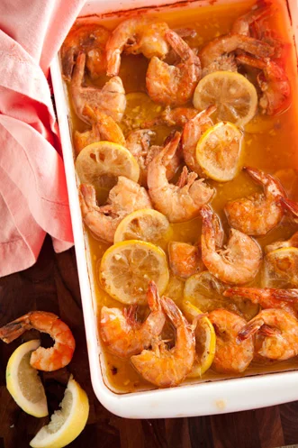

Fiery Cajun Shrimp

Description
This is a yummy recipe off of Paula's TV show.
Ingredients
- 2 cups melted butter
- 1⁄4 cup Worcestershire sauce
- 1⁄4 cup fresh lemon juice
- 2 tablespoons ground pepper
- 2 tablespoons hot sauce (recommended Texas Pete)
- 4 garlic cloves, minced
- 5 lbs unpeeled medium shrimp
- 2 lemons, thinly sliced
- French bread, for dipping
Instructions
- Preheat the oven to 400 degrees F.
- Stir together the butter, Worcestershire sauce, lemon juice, pepper, hot sauce, garlic, and salt. Pour half this mixture into a large heatproof dish.
- Layer half the shrimp and half the lemon slices in the dish; then form a second layer with the remaining shrimp and lemon slices, and pour remaining sauce into the dish.
- Bake, uncovered, for 20 minutes, or until the shrimp are pink, stirring twice. Pour off the sauce into individual serving dishes. Serve the shrimp with plenty of French bread for dipping in the spicy butter sauce.
Home